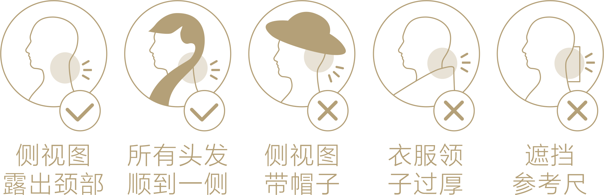

请选择
- 为了测量准确，请露出颈部，避免带帽子进行测量，同时不要穿着领子过厚的衣服；
- 需注意将所有头发顺到一侧，露出颈部拍摄；
- 请放松，呈自然站立状态；
- 请注意在拍摄时，请勿遮挡参考尺；

注：VDetection为专利测量技术，测试结果会根据不同用户的发型、姿势、拍摄角度、 场景光线不同而有差异，如需要获得精确尺


请选择
注：VDetection为专利测量技术，测试结果会根据不同用户的发型、姿势、拍摄角度、 场景光线不同而有差异，如需要获得精确尺